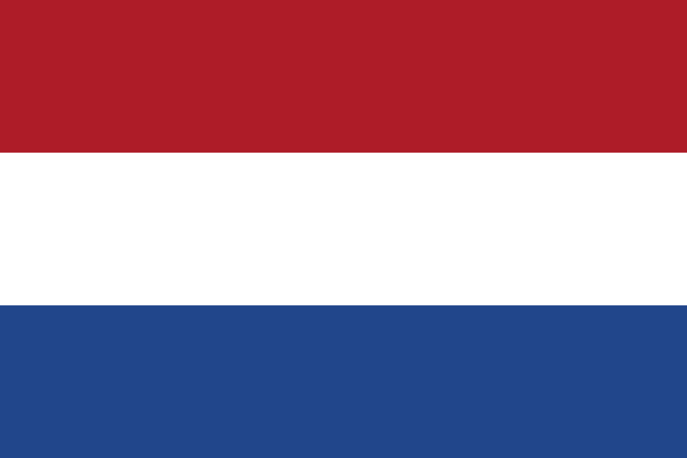

AMSTERDAM
ANASAYFA

Hollanda (Felemenkçe: Bu ses hakkındaNederland (yardım·bilgi)) esas olarak Batı Avrupa'da ve kısmen Karayipler'de bulunan bir ülkedir.[6] Hollanda Krallığı'nı meydana getiren dört ülkeden en büyüğüdür.[6] Hollanda, Avrupa'da doğuda Almanya'ya, güneyde Belçika'ya ve kuzeybatıda Kuzey Denizi'ne komşu olan on iki vilayetten ve Karayipler'de Bonaire, Sint Eustatius ve Saba adaları olmak üzere üç özel belediyeden oluşur.[6]